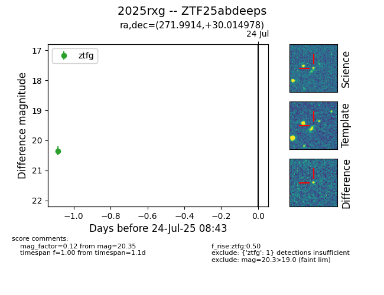

Target ZTF25abdeeps at 2025-07-24 08:43, see:
FINK: fink-portal.org/ZTF25abdeeps
Lasair: lasair-ztf.lsst.ac.uk/objects/ZTF25abdeeps
ALeRCE: alerce.online/object/ZTF25abdeeps
TNS: wis-tns.org/object/2025rxg
YSE: ziggy.ucolick.org/yse/transient_detail/2025rxg
alt names
ZTF25abdeeps (ztf,fink)
2025rxg (tns,yse)
coordinates:
equatorial (ra, dec) = (271.9914,+30.01498)
galactic (l, b) = (56.4887,+21.92528)
photometry
last ztfg=20.35
1 ztfg detections
